Lab Description
The purpose of this lab is to connect two Time of Flight (TOF) sensors and an Inertial Measurement Unit (IMU) to the Artemis nano. This connection will be made through a single I2C connection, so that
each sensor is daisy chained together.
With these sensors in place, the robot will be able to sense how far objects are to it from the left and from the front. It will also be able to use the IMU to sense the pitch, roll, and yaw of the car as it moves.
Setup
Before completing the different parts of this lab, the location of the sensors on the robot must be considered. I've decided to put the TOF sensors on the front and left of the robot, and the IMU directly above the battery pack.
Wires were cut to the appropriate length to fit into place and soldered onto the sensors. On top of this, two header pins were soldered onto the Artemis board at pins A1 and A2, and a wire is connected from them to the XSHUT pins on the TOF sensors.
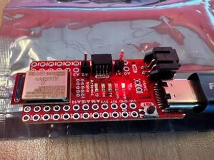
These headers are used for now to make prototyping easier and may change in the future. I plan to solder the wires directly to the board for the final design.
Lab Sections
Part 1a:
Part 1 of this lab involves testing the functionality of the TOF sensors to ensure everything is working properly. The first issue faced is that we have two TOF sensors with the same address
connected to a single I2C connection. The XSHUT pins help solve this problem by allowing us to turn a sensor on or off. The XSHUT pin on the sensor is connected to the soldered-on header pins on the Artemis.
These pins are written low to turn the sensor off. With one sensor off, I can then change the address of the on sensor.
The default address of the sensors in 0x52. However, this 8-bit address includes the read/write bit as can be seen in the image below.
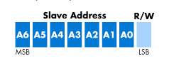
The actual address is right shifted to become 7-bits and is 0x29 by default. The address was printed out below using getI2CAddress() and shows the entire 8-bit address.
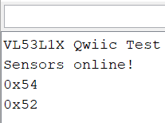
As can be seen, the second sensors address was changed to 0x54 using setI2CAddress((uint8_t)0x54) while the other sensor was off. I decided not to use 0x53 as that is the sensors default write address.
Part 2a:
The TOF sensors have 3 modes. One for short range sensing < 1.3 meters, one for medium range < 3m, and one for long range < 4m. The longer-range modes are more prone to ambient light noise, and are slower to calculate.
Under most circumstances, the robot will likely be in short-range mode. However, it may also be beneficial to sometimes change
the mode on the fly. Ie. if no obsticles have been seen within 1.3 meters in short-range mode for the last 5 seconds, we may want to go to long range mode. Deciding this will take some testing once the robots is full assembled.
Part 3a:
For this portion of the lab, I tested the accuracy of the TOF sensors in both long range mode and short-range mode from 20mm to 1000mm. Below is an image of the setup I used for this test.

The accuracy of the short distance mode was good between these ranges, as can be seen below. However, the long-range mode was not as good. I expected this to be the case within 1 meter. The
issue is that I was not able to get any readings above 1200 mm for either long range or short-range mode. This makes sense for short range, as its max distance is 1300 mm, but long range should
be able to read up to 4000 mm. I have yet to find the cause of this issue.
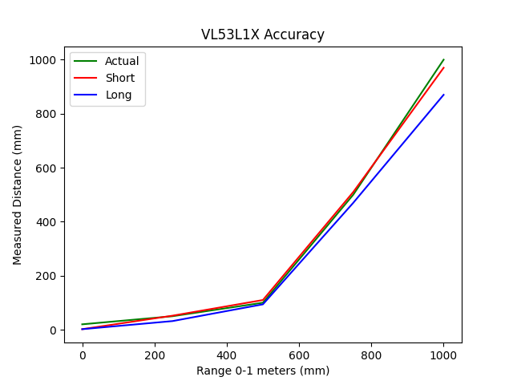
Update:
The ambient light in the room and the reflectiveness of a surface plays a larger role than I expected for long range mode.
I was able to get the long range sensor to measure accurately from over 2 meters away, but only when pointed at a mirror in a room with low ambient light. I will likely not be using long range mode at all.
Part 1b:
This part of the lab involves using the IMU, which is connected to the same I2C pins as the TOF sensors. The IMU has a different default address than the TOF sensors, so it does not need, and extra work done to get communication going.
However, the IMU does have a constant called AD0_VAL that is 1 by default. This represents the last bit in the I2C address, a one in the last bit of an I2C address is generally a 0 when reading and a 1 when writing. We will not
be writing to the IMU, so this needs to be changed to a 0 for reading.
The values can then be printed from the IMU and can be seen below.
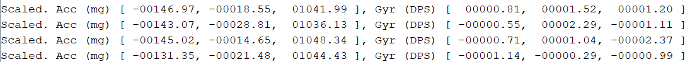
The accelerometer values are in milli g’s, and the gyroscope values are in degrees per second. When the board is moved around, these values change. This can be hard to see using the given layout. Also, these are not the units we want to work with on our robot.
Part 2b:
Part 2 of the IMU portion of this lab involves changing the units of the accelerometer to measure angles in the pitch and roll of the IMU. This is done by converting the measurements from part 1b. These measurements are
converted to pitch and roll using int pitch_a = 180*atan2(myICM.accX(), myICM.accZ())/M_PI; and int roll_a = 180*atan2(myICM.accY(), myICM.accZ())/M_PI;. The angle measurements can be seen in the images below.
Flat
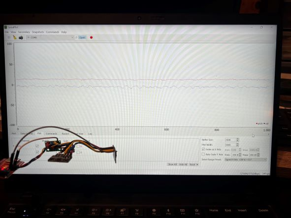
Pitched up
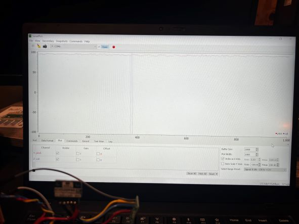
Rolled left
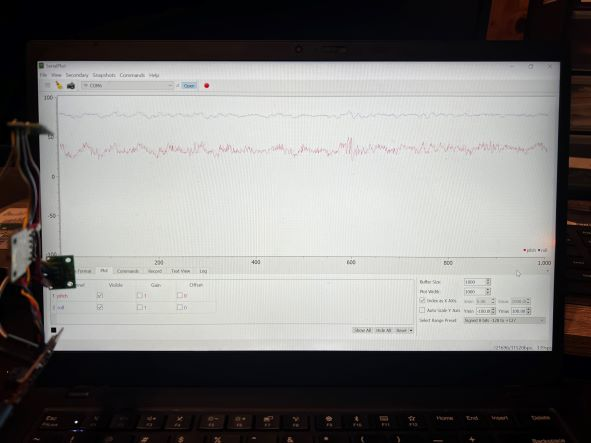
While the data is noisy, the measurements are relatively accurate. To reduce this noise, the data is passed through a low-pass filter.
The code to filter this data is pitch = a*pitch + (1-a)*prev_pitch;, and the data after filtering only the pitch can be seen below.
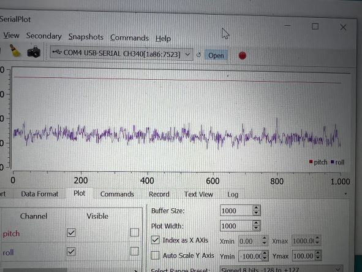
The pitch data is now a steady line around 90 degrees when pitched up. The improvement this filter makes can easily be seen by comparing the pitch and roll data in this image.
Part 3b:
For the last portion of this lab, pitch roll and yaw are calculated using the IMU's gyroscope. A benefit of using the gyroscope is that it allows for the measurement of yaw, whereas the accelerometer did not.
the gyroscope data is modified to be more usable using this code pitch_g = pitch_g + myICM.gyrX()*dt;. This gyro data with the accelerometer data allows for more sensor fusion and higher levels of accuracy.
The data for the gyro can be seen in the image below. This is with the gyro centered at the start, then turned to a random angle.
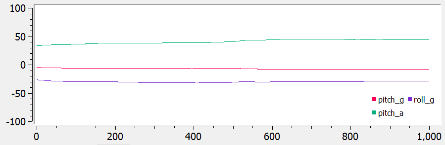
Lab Description
With these sensors in place, the robot will be able to sense how far objects are to it from the left and from the front. It will also be able to use the IMU to sense the pitch, roll, and yaw of the car as it moves.
Setup
Lab Sections
The default address of the sensors in 0x52. However, this 8-bit address includes the read/write bit as can be seen in the image below.
getI2CAddress() and shows the entire 8-bit address.
setI2CAddress((uint8_t)0x54) while the other sensor was off. I decided not to use 0x53 as that is the sensors default write address.
AD0_VAL that is 1 by default. This represents the last bit in the I2C address, a one in the last bit of an I2C address is generally a 0 when reading and a 1 when writing. We will not
be writing to the IMU, so this needs to be changed to a 0 for reading.
The values can then be printed from the IMU and can be seen below.
int pitch_a = 180*atan2(myICM.accX(), myICM.accZ())/M_PI; and int roll_a = 180*atan2(myICM.accY(), myICM.accZ())/M_PI;. The angle measurements can be seen in the images below.
Flat
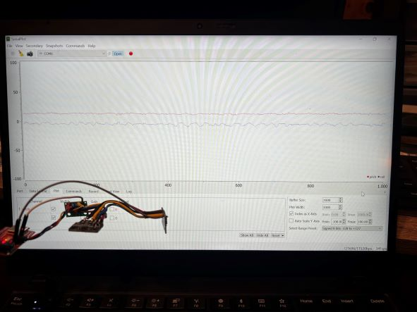Pitched up
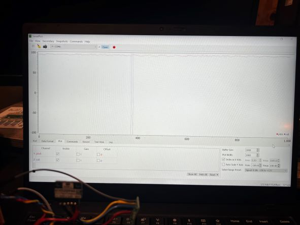Rolled left
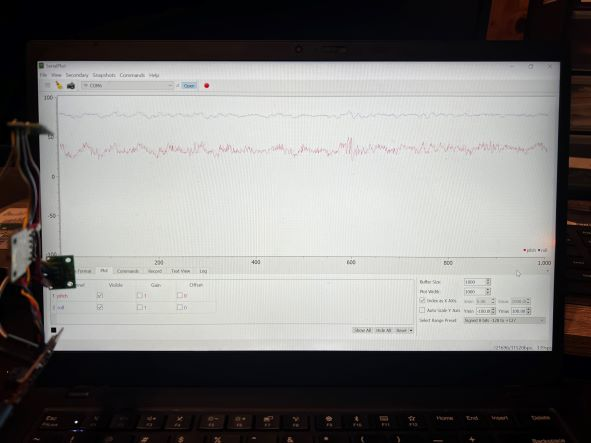pitch = a*pitch + (1-a)*prev_pitch;, and the data after filtering only the pitch can be seen below.
pitch_g = pitch_g + myICM.gyrX()*dt;. This gyro data with the accelerometer data allows for more sensor fusion and higher levels of accuracy.
The data for the gyro can be seen in the image below. This is with the gyro centered at the start, then turned to a random angle.